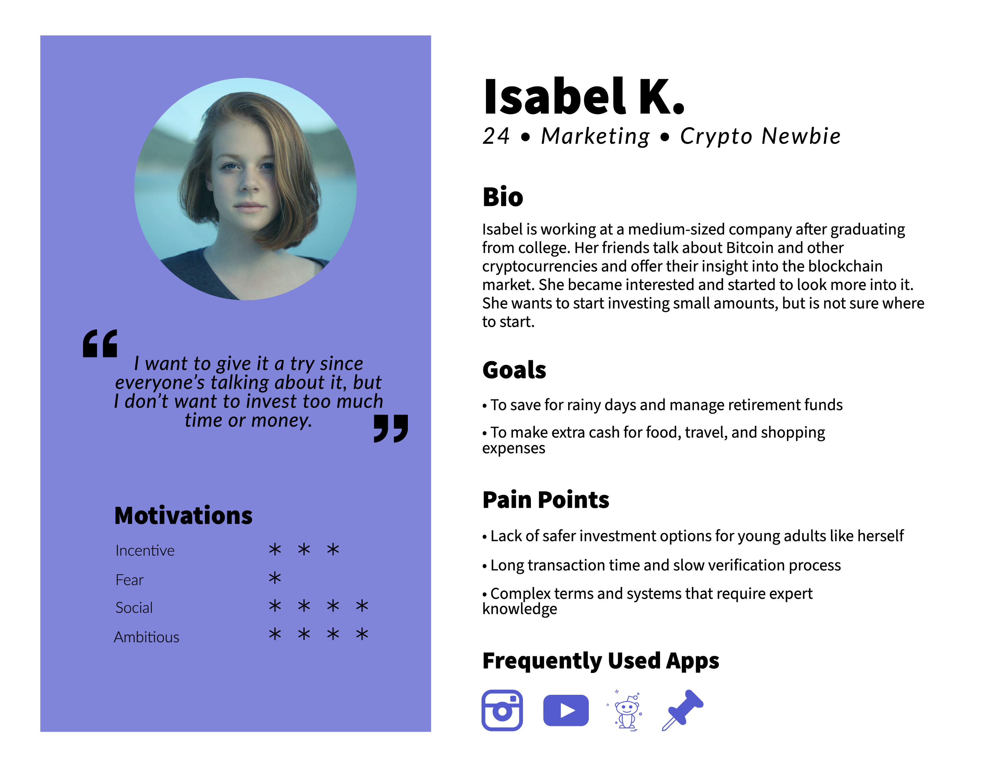
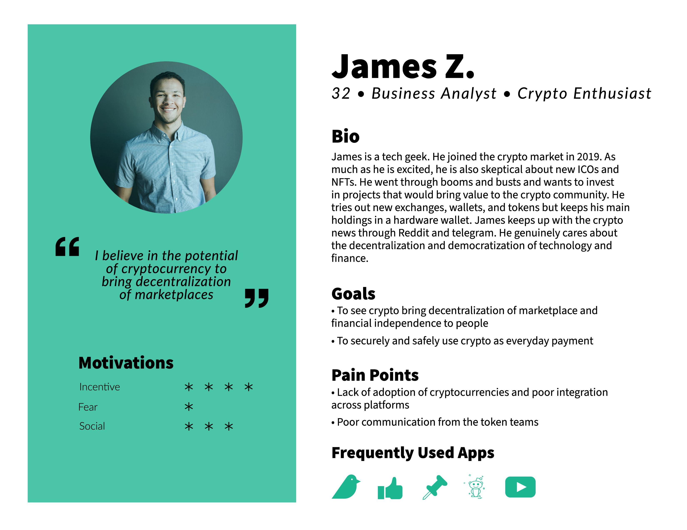
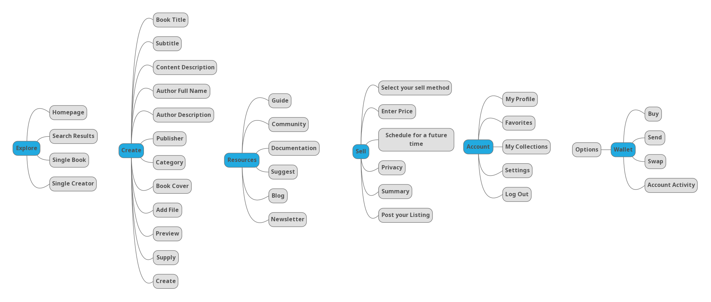
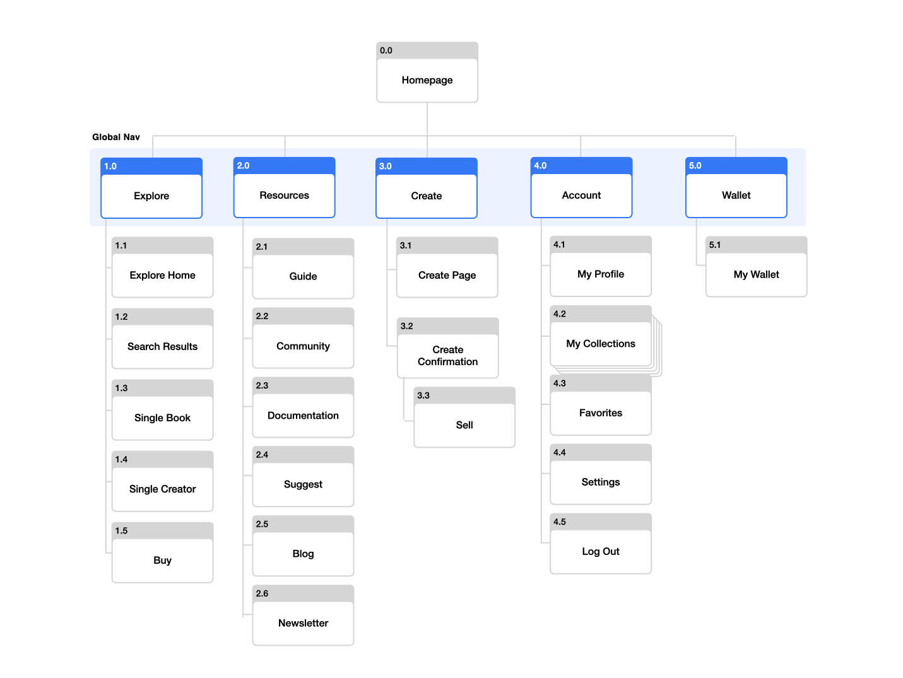
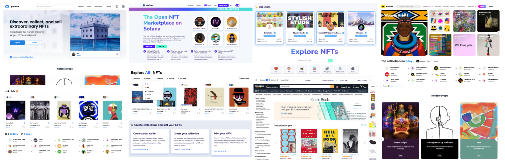
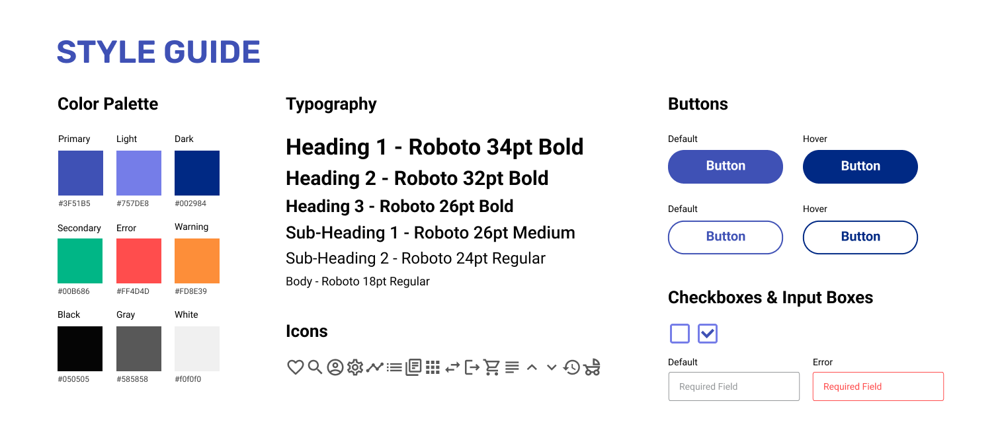

Titanbooks Marketplace Design
Overview
Titanbooks uses blockchain to decentralize the small business ecosystem and implement Non-Fungible
Token to protect the book copyrights.
I was responsible of user research, market research, user personas, information architecture,
interaction design, visual design, mock-ups, and wireframing.
Role
Chief Marketing Officer
Date
Aug 2021 - Present
Company
Quus
Background
Project BREE (Brilliant Readers Evolve Ecosystem) aims to decentralize and revolutionize the process of book publication and the structure of the ebook distribution market through blockchain technology. In doing so, BREE will redefine the definition of an ebook.
The Problems in the Current Publishing Market
Responsible of disseminating new ideas, the publishing market is facing problems in both traditional book publishing industry and ebook industry. Alongside that, the new trend of short attention span and the introduction of new media add to the already saturated competition. This in turn puts more pressure on writers who have less bargaining power versus the publisher.
- Oligopoly of the Big Four companies in the traditional paper book industry
- Difficulty with and diminishing market for the resale of used paper books
- Monopoly of the e-books by Amazon, sold and accessible only in the Kindle format
- Copyright violation through illegal file sharing practices
- No resale opporunities for e-books, decreasing the value of purchasing and owning books
The Solution: Non-Fungible Token (NFT) blockchain technology
Titanbooks is an online marketplace that oversees the publication and distrubtion of BookNFT, protecting the rights of both creators and readers.
- Creators can publish books independent from Third Parties.
- Readers can purchase directly from the authors.
- Clear ownership of the books is documented.
- The resale of e-books is protected, without decrease in its value.
User Types
While not mutually exclusive, Titanbooks users can be largely classified into four types: readers,
creators, collectors, stakers, and verifiers.


Design Process
This is the documentation of the design process.
User Personas
In order to empathize with the different types of users, two types of user personas were created based on experiences, assumptions, and market research. These were used to reflect on the needs and challenges of the user and create optimal user experiences.
Persona 1: Isabel K.
Persona 2: James Z.
Feature Requirements
To better understand the marketplace structure and required content, I ran through all information and features that need to be included. Based on this, I decided how to best integrate the contents into the most intuitive information structure.
Information Architecture
Taking into account the developed user personas, business models and company mission statement, I developed the following information architecture.
Visual References
Before starting with wireframing and mock-ups, I picked out a few marketplace platforms from market research and created a mood board.
Style Guide
Based on the mood board and internal discussion, I created the style guide.
Wireframes
Based on the user personas, feature requirements, and information architecture, I sketched up wireframes to gather internal feedback on the high-level concept.
Mockups
User Flow for Buying
User Flow for Selling
Reflection
This project challenged me to develop an understanding of the new blockchain technology and conduct market research in the blockchain industry. Due to the blockchain technology's nature as a field with a steep learning curve, I had to spend more time on doing background research and market research. Also, working at an early-stage startup was an eye-opening experience that taught me to be proactive in taking roles and flexible with the schedule and work hours.
Learnings
-
► Effective and timely communication is the key.
As much time as I spent on research and design work, I also spent a considerable amount of time discussing, explaining, and reviewing both visual designs and user flows. I learned how to effectively convey my rationale and justify the design, while also be open to new ideas and suggestions from team members. At the beginning, I waited until I fully developed a feature to ask for feedback. As the project progressed, however, I actively reached out to team members for their opinions, anticipating problems before they arise, which moved the project forward more efficiently.
-
► End-to-end product development process means more power, more fun, and more work.
Working at a startup is exciting and gives the team with much freedom along with constraints, including limited resources and other internal challenges. As the old saying goes, more freedom means more responsibility. Given that there are multiple projects that demand the company's resources, I had to juggle the demands from other teams with tasks at hand. Also, time management and flexible attitude have become my new forte.